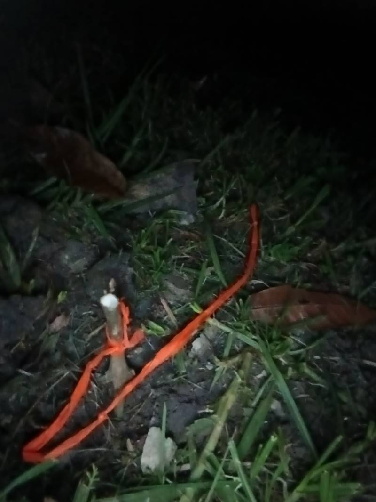

Ayer tal vez tuviste muchos regalos, así que mejor no te hice cargar
más. Pero, hoy es otro día...
Antes que nada, mejor lee esto si estás sola, o si no estás con
alguien que yo conozca porfa.
Quiero darte algo chévere, al menos lo intenté. Nos alejamos pailas,
pero obvio pienso en ti.
¿Qué hay que buscar? Es una pregunta difícil (yo aún estoy buscando no
sé qué mientras todos me dicen que pierdo el tiempo, pero bueno), por
ahora, buscas una llave. Está en el campus principal de la
universidad, alrededor del gimnasio y el bloque J, cerca a unas bancas
al lado de un árbol con un palo atravesado hacia el piso. La llave
está en un árbol cercano a ese árbol, pero no es ese.
Espero que puedas encontrar el árbol, si miras hacia el piso (en base del árbol), vas a ver un palito con un lacito naranja amarrado , ese palito marca que la llave está por ahí, escarba cerca del palito (solo es quitar las piedras alrededor), y encontrarás un papelito naranja, abre con cuidado el papelito y guarda lo que hay adentro.
El palito üö© y el papelito Estaba de noche, as√≠ que la foto no qued√≥ muy bien que digamos, sorry por eso, pero ah√≠ se ve.
Te cuento mientras bajas al city
S√≠, para seguir tienes que bajar üòÅ y mientras, te cuento cosas.
He estado mejorando, es irreal decir que si quieres a alguien lo vas a
dejar de querer de la noche a la mañana (cuando algo fue real). Pero,
las situaciones y los consejos de los demás me han ayudado. Como te
dije, fuiste importante para mi, y no es fácil solo dejar las cosas
así, me moría de ganas por hablarte, pasar tiempo contigo, pero sé que
eso solo me dañaría. En el fondo creo que tenía alguna esperanza de
que me buscaras y saber si te importaba.
Es difícil para mi saber qué hacer, nunca había estado en una
situación así, y la inexperiencia es mi guia. Bien o mal, vamos
avanzando.
Ahora, sobre todo esto de la página y la mini aventura. Hice eso hoy,
o mejor, ayer 13 de agosto en la noche, un amigo me acompañó (aunque
no estuvo de acuerdo jaja). Son las 12:51am del 14 de septiembre,
mañana tengo una exposición a las 7am de una materia importante, con
un profe jodido, pero aquí estoy. La idea se me ocurrió en el bus
hacia garagoa, ahora es mi espacio favorito, refresco ideas y me
siento en paz (y se me ocurren bobadas). Me pareció que hacer esto
sería algo bonito.
Cuando Nikolas sepa de esto no sé cuánto tiempo deje de hablarme (y no
solo él) jasjas ¿Vale el riesgo? Tendré mis razones, espero que me
entiendan.
Ndeahh, no estoy ahí obviamente (5).
Te iba a decir cuál es el candado de la llave, pero es más divertido
si adivinas, en eso eres súper buena, eso sí, el candado está en la
foto, tampoco te voy a decir que busques en todo el poli. Ten cuidado
con los guardias, que no piensen que estás probando las llaves con
malas intenciones.
Ahora, mira hacia atrás y abrázame ¿si?
Bueno, no es mucho, pero es trabajo honesto. Jasjajs el detalle no es
tanto, pero espero que la experiencia haya sido chévere. Una página
dedicada (¿Viste los detalles? Reinicia la página), una travesía del
tesoro, y, finalmente, el tesoro.
Espero que te haya gustado. Y si no üòí
Gracias por todo. Por los planes, por lo que hiciste, lo que no, por
estar y por desaparecer, jasjsj por todo. Piensa en algo que hayas
compartido conmigo... ¡Gracias por eso!
Ahora sí me despido, siendo la 1:58am jasjas que tontooo. Mi idea con
esta página es también agregar otro contenido, ¿Viste que hay
contenido "bloqueado"? Tengo más cosas que decir y hacer, pero esto es
desgastante y no s√© si las ganas me alcancen üò©
¿Hablamos? No de la forma común